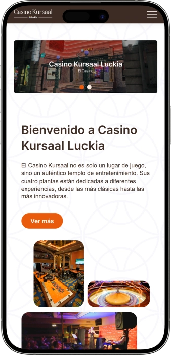

Oferta exclusiva de bienvenida de
Oferta exclusiva de bienvenida de
Vive la Experiencia del Mejor Casino en Costa del Sol
Los mejores casinos
Detalles de bonificación
Casino
Bonos
Rate
Giros gratis
Más info
Conseguir
Ventajas
- ¿Buscas un casino online de confianza? Casino Kursaal combina décadas de experiencia presencial con tecnología digital de vanguardia. Licencia oficial, juego certificado y soporte 24/7. Esto es lo que nos distingue:
-
Licencia oficial de juego con auditorías regulares de fairplay y RNG certificado
-
Más de 1500 juegos: slots, ruleta, blackjack, póker y mesas en vivo
-
Programa Luckia Club con puntos canjeables por cenas y experiencias exclusivas
-
Retiros rápidos con e-wallets, criptomonedas y transferencias bancarias seguras
-
Soporte multilingüe disponible 24/7 por chat en vivo, email y teléfono
-
4 plantas de entretenimiento con experiencias desde clásicas hasta innovadoras
- Únete a miles de jugadores que disfrutan de juego seguro y pagos instantáneos en Casino Kursaal. Nuestro equipo está siempre disponible para asistirte en tu idioma preferido. ¡Comienza tu aventura ahora!
Casino Kursaal App


Sobre Casino Kursaal: Tradición y Innovación
Casino Kursaal es un referente del entretenimiento en Costa del Sol, combinando la elegancia de los casinos tradicionales con la innovación tecnológica. Durante décadas hemos perfeccionado la experiencia de juego presencial, y ahora llevamos esa excelencia al mundo digital. Nuestras cuatro plantas físicas albergan desde máquinas tragaperras clásicas hasta mesas de póker profesionales, mientras que nuestra plataforma online ofrece acceso 24/7 a miles de juegos premium con dealers en vivo.
- Expansión a más de 500 máquinas tragaperras de última generación
- Introducción de mesas de juego en vivo con dealers profesionales
- Lanzamiento del programa Luckia Club con recompensas exclusivas
- Certificación internacional de juego justo y RNG auditado
La seguridad de nuestros jugadores es nuestra prioridad absoluta. Casino Kursaal opera bajo licencia oficial de juego emitida por autoridades reguladoras españolas, garantizando total transparencia y protección del jugador. Todos nuestros juegos utilizan generadores de números aleatorios (RNG) certificados por laboratorios independientes como eCOGRA y iTech Labs. Empleamos encriptación SSL de 256 bits para proteger todas las transacciones financieras y datos personales.
Miramos hacia el futuro con entusiasmo, expandiendo constantemente nuestra oferta de juegos y mejorando la experiencia del usuario. Nuestro compromiso es ofrecer entretenimiento de clase mundial combinado con juego responsable. Únete a la familia Kursaal y descubre por qué somos el casino preferido de Costa del Sol.
Métodos de Pago en Casino Kursaal: Guía Completa
Métodos de Pago Disponibles: Comparativa Detallada
Elegir el método de pago correcto es fundamental para disfrutar de una experiencia fluida en Casino Kursaal. Cada opción tiene características únicas en velocidad de procesamiento, límites de transacción, comisiones y disponibilidad regional. En esta guía exhaustiva analizamos todos los métodos disponibles para ayudarte a tomar la mejor decisión según tus necesidades específicas y preferencias de juego.
Hemos evaluado cada método considerando factores críticos como la seguridad de las transacciones mediante encriptación SSL, la rapidez de depósitos y retiros, las comisiones aplicables según tu banco o proveedor, y la facilidad de uso tanto para principiantes como para jugadores experimentados. Nuestra tabla comparativa te permite visualizar rápidamente las diferencias entre las opciones más populares del mercado español y europeo.
| Método de Pago | Tiempo Depósito | Tiempo Retiro | Límites |
|---|---|---|---|
| Tarjetas Visa/Mastercard | Instantáneo | 3-5 días | €20 - €5,000 |
| E-Wallets (Skrill, Neteller) | Instantáneo | 24 horas | €10 - €10,000 |
| Transferencia Bancaria SEPA | 1-2 días | 3-7 días | €50 - €50,000 |
| Criptomonedas (BTC, ETH, LTC) | 15-30 min | 1-2 horas | €20 - €20,000 |
| PayPal | Instantáneo | 24 horas | €10 - €8,000 |
| Paysafecard | Instantáneo | No disponible | €10 - €1,000 |
| Bizum | Instantáneo | No disponible | €10 - €500 |
Tarjetas de Crédito y Débito: La Opción Universal
Las tarjetas Visa y Mastercard continúan siendo el método más utilizado por jugadores españoles debido a su aceptación universal y familiaridad. Los depósitos se procesan instantáneamente, permitiéndote comenzar a jugar en Casino Kursaal inmediatamente después de completar la transacción sin tiempos de espera. Sin embargo, los retiros requieren un período de procesamiento de 3 a 5 días hábiles debido a las verificaciones de seguridad bancarias obligatorias según normativas financieras europeas.
La principal ventaja radica en la disponibilidad prácticamente universal y la protección contra fraudes que ofrecen las instituciones emisoras bajo la directiva PSD2 europea. Los límites de transacción son moderados, perfectamente adecuados para jugadores recreativos que depositan entre €20 y €500 habitualmente. Es importante verificar previamente que tu entidad bancaria no aplique restricciones sobre transacciones relacionadas con juegos de azar, ya que algunos bancos españoles implementan bloqueos automáticos.
- Ventajas principales: Aceptación universal en todos los casinos online, protección bancaria contra fraudes bajo normativa europea PSD2, no requiere registro en plataformas terceras, ideal para usuarios que prefieren métodos tradicionales de pago.
- Desventajas a considerar: Retiros significativamente más lentos comparados con e-wallets o criptomonedas, algunos bancos españoles bloquean transacciones de juego, pueden aplicarse comisiones internacionales variables.
- Recomendado para: Jugadores que valoran familiaridad y seguridad de métodos bancarios tradicionales, usuarios sin acceso a e-wallets o criptomonedas, depósitos ocasionales de cantidades moderadas.
- Consejo de seguridad: Verifica que el casino muestre el candado SSL en la URL antes de introducir datos de tu tarjeta. Casino Kursaal utiliza encriptación de grado bancario para proteger toda información sensible.
E-Wallets: Velocidad y Privacidad Maximizadas
Las billeteras electrónicas como Skrill, Neteller y PayPal han revolucionado las transacciones en casinos online gracias a su velocidad excepcional y capa adicional de privacidad. Tanto depósitos como retiros se procesan de manera casi instantánea, con retiros típicamente completados en menos de 24 horas laborables, eliminando la frustrante espera de días que caracteriza a métodos bancarios tradicionales. Esta rapidez convierte a las e-wallets en la opción preferida para jugadores activos que valoran el acceso inmediato a sus ganancias.
La ventaja adicional de privacidad es significativa: no necesitas compartir directamente información bancaria sensible con Casino Kursaal, ya que la e-wallet actúa como intermediario seguro entre tu cuenta bancaria y el casino. Los límites de transacción suelen ser sustancialmente más altos que con tarjetas, alcanzando hasta €10,000 por operación, lo que resulta ideal para jugadores high-roller que manejan bankrolls considerables. Las comisiones varían según el proveedor pero generalmente son competitivas.
- Skrill: Una de las más populares en España y Europa, ofrece comisiones competitivas y excelente soporte multimoneda con conversión automática. Ideal para jugadores que manejan euros y otras divisas simultáneamente.
- Neteller: Similar a Skrill con fuerte presencia en el sector de juego online. Ofrece una tarjeta prepagada Mastercard vinculada para mayor flexibilidad en el uso de fondos ganados, permitiendo pagos en comercios físicos.
- PayPal: La más reconocida globalmente con la mayor base de usuarios, aunque no todos los casinos españoles la aceptan debido a políticas restrictivas. Proporciona excelente protección al comprador e interfaz intuitiva familiar para millones de usuarios.
- Advertencia importante: Algunos casinos excluyen depósitos realizados vía e-wallet de bonos de bienvenida o promociones específicas. Verifica siempre los términos y condiciones del bono antes de elegir tu método de pago.
- Proceso de verificación: Las e-wallets requieren verificación KYC propia (documento identidad, comprobante domicilio). Completa este proceso antes de usar la e-wallet en Casino Kursaal para evitar retrasos en retiros.
Criptomonedas: Anonimato y Transacciones Ultrarrápidas
Bitcoin, Ethereum, Litecoin y otras criptomonedas están ganando adopción masiva como método de pago en casinos online españoles debido a sus características revolucionarias. Las transacciones se procesan en blockchain descentralizada, eliminando intermediarios bancarios que ralentizan el proceso tradicional. Los retiros con criptomonedas en Casino Kursaal típicamente se completan en 1-2 horas una vez confirmados por la red blockchain, significativamente más rápido que cualquier método bancario tradicional disponible.
La principal ventaja competitiva es el nivel de privacidad: las transacciones crypto requieren únicamente direcciones de wallet alfanuméricas sin vincular datos personales o bancarios identificables. Esto resulta especialmente atractivo para jugadores que priorizan el anonimato dentro de los límites legales. Las comisiones de transacción son generalmente inferiores a las de métodos bancarios tradicionales, aunque varían según la congestión de la red blockchain en el momento de la transacción. No existen restricciones geográficas ni problemas con conversión internacional de divisas.
Sin embargo, es crucial comprender la volatilidad inherente a las criptomonedas. El valor de tu depósito puede fluctuar significativamente entre el momento del depósito y el retiro debido a las oscilaciones naturales del mercado crypto. Para mitigar este riesgo de manera efectiva, jugadores experimentados convierten inmediatamente sus ganancias a moneda fiat como euros, o utilizan stablecoins como USDT o USDC que mantienen paridad estable con el dólar estadounidense mediante respaldo de reservas.
- Bitcoin (BTC): La criptomoneda más aceptada globalmente con mayor liquidez en exchanges. Comisiones variables según congestión de red (pueden alcanzar €5-20 en momentos de alta demanda). Ideal para transacciones grandes superiores a €1,000.
- Ethereum (ETH): Procesamiento generalmente más rápido que Bitcoin gracias a bloques más frecuentes. Comisiones (gas fees) variables pero típicamente más bajas que BTC. Segunda criptomoneda más popular en casinos españoles.
- Litecoin (LTC): Diseñada específicamente para transacciones cotidianas con confirmaciones rápidas en 2.5 minutos. Comisiones mínimas de céntimos. Excelente opción para movimientos frecuentes de fondos entre €50-500.
- Stablecoins (USDT, USDC, DAI): Eliminan completamente el riesgo de volatilidad manteniendo paridad 1:1 con dólar estadounidense mediante respaldo de reservas auditadas. Perfectas para jugadores que quieren ventajas crypto sin exposición a fluctuaciones de precio.
- Consideración legal: Aunque las criptomonedas ofrecen privacidad, Casino Kursaal está obligado por regulación española a verificar tu identidad (KYC) antes de procesar retiros, independientemente del método de pago utilizado.
Transferencias Bancarias SEPA: Para Grandes Volúmenes
Las transferencias bancarias directas SEPA (Single Euro Payments Area) son el método preferido para jugadores VIP y high-rollers que necesitan mover cantidades sustanciales de dinero de manera segura. Con límites significativamente superiores a otros métodos (hasta €50,000 o más según tu nivel VIP en Casino Kursaal), permiten depositar y retirar grandes sumas sin preocupaciones sobre restricciones de transacción múltiples. Son el método más seguro desde perspectiva de trazabilidad formal y registro financiero legal.
El principal inconveniente es el tiempo de procesamiento prolongado: los depósitos SEPA pueden tardar 1-2 días hábiles en reflejarse en tu cuenta de casino, y los retiros entre 3-7 días hábiles dependiendo de bancos intermediarios involucrados. Este delay se debe al procesamiento a través del sistema bancario europeo SEPA, que involucra múltiples verificaciones de seguridad antilavado obligatorias según normativa europea. No es la mejor opción si buscas acceso inmediato a fondos, pero es insuperable para transacciones superiores a €10,000 que superan límites de otros métodos.
Las transferencias SEPA dentro de la eurozona tienen comisiones muy bajas o nulas, especialmente comparadas con transferencias internacionales SWIFT. La mayoría de bancos españoles no cobran comisiones por transferencias SEPA salientes dentro de España, aunque algunos bancos online pueden aplicar pequeñas tarifas de €1-3. Casino Kursaal no cobra comisiones adicionales por depósitos SEPA, aunque pueden aplicar comisión fija en retiros superiores a cierto umbral que varía según tu nivel de jugador.
- Ventajas para VIP: Límites prácticamente ilimitados para jugadores high-roller con volumen de apuesta elevado. Trazabilidad completa para declaración fiscal. Seguridad máxima con protección bancaria total.
- Proceso de retiro: Requiere verificación bancaria adicional en primer retiro (enviar documento con IBAN visible). Retiros posteriores se procesan más rápido una vez tu cuenta bancaria está verificada en el sistema.
- Recomendado para: Jugadores VIP con bankrolls superiores a €10,000, usuarios que priorizan seguridad y trazabilidad sobre velocidad, transacciones únicas de gran volumen en lugar de movimientos frecuentes pequeños.
- Optimización de tiempos: Inicia transferencias SEPA en días laborables antes de mediodía para procesamiento mismo día. Transferencias viernes tarde pueden no procesarse hasta lunes siguiente.
Bizum: El Método Español Instantáneo
Bizum ha revolucionado los pagos digitales en España con más de 20 millones de usuarios activos, y ahora está disponible en Casino Kursaal para depósitos instantáneos. Vinculado directamente a tu cuenta bancaria española mediante tu número de teléfono móvil, Bizum permite depósitos inmediatos sin necesidad de introducir datos de tarjeta o coordenadas bancarias cada vez. La confirmación se realiza mediante tu app bancaria en segundos, haciendo el proceso extremadamente fluido y familiar para usuarios españoles.
La principal limitación de Bizum es su disponibilidad exclusiva para depósitos, no para retiros, debido a restricciones técnicas del sistema. Los límites también son más restrictivos comparados con otros métodos, con un máximo típico de €500 por transacción y €1,000 diarios según tu banco emisor. Sin embargo, para jugadores recreativos españoles que realizan depósitos frecuentes de cantidades moderadas, Bizum ofrece la combinación perfecta de velocidad, seguridad bancaria y familiaridad con tecnología ya utilizada diariamente.
- Compatibilidad: Disponible con prácticamente todos los bancos españoles principales incluyendo BBVA, Santander, CaixaBank, Sabadell, ING, y más de 40 entidades. Verifica con tu banco si tienes Bizum activado.
- Proceso simplificado: Selecciona Bizum, introduce cantidad, confirma en tu app bancaria mediante huella digital o PIN. Fondos disponibles en Casino Kursaal instantáneamente sin esperas.
- Seguridad reforzada: Utiliza autenticación fuerte SCA (Strong Customer Authentication) obligatoria bajo PSD2. Cada transacción requiere confirmación biométrica o PIN en tu app bancaria personal.
- Comisiones: Casino Kursaal no aplica comisiones adicionales por depósitos Bizum. Tu banco tampoco debería cobrar por pagos Bizum a comercios según política estándar del sistema.
Métodos Prepagados: Control Total del Presupuesto
Paysafecard y otros vouchers prepagados ofrecen una solución única para jugadores que desean mantener control estricto sobre su presupuesto de juego mediante limitación física de fondos disponibles. Compras vouchers con valor predeterminado (típicamente entre €10 y €100) en más de 650,000 puntos de venta físicos en España incluyendo estancos, quioscos y gasolineras, y luego utilizas el código PIN de 16 dígitos para depositar esa cantidad exacta en Casino Kursaal. No puedes gastar más del valor cargado previamente, convirtiéndolo en herramienta excelente para juego responsable y control presupuestario.
La limitación principal es que Paysafecard funciona exclusivamente para depósitos, no para retiros de ganancias. Necesitarás configurar un método alternativo como transferencia bancaria o e-wallet para retirar fondos ganados en Casino Kursaal. Los límites también son más restrictivos, con máximo típico de €1,000 por transacción y verificación de identidad obligatoria para cantidades superiores a €50 en algunos países. Es ideal para jugadores ocasionales que quieren probar Casino Kursaal sin vincular métodos de pago permanentes.
- Ventajas de privacidad: No requiere cuenta bancaria ni datos personales para compra en punto físico. Pago anónimo en efectivo manteniendo privacidad completa en la adquisición del voucher.
- Prevención de sobregasto: Imposible gastar más del valor cargado. Herramienta perfecta para implementar límites de depósito autoimp puestos como parte de estrategia de juego responsable personal.
- Disponibilidad inmediata: Depósitos instantáneos en Casino Kursaal introduciendo el código PIN. Sin registros previos ni verificaciones que retrasen el proceso inicial.
- Combinación de códigos: Puedes combinar hasta 10 códigos Paysafecard en una sola transacción para alcanzar cantidades superiores si has comprado múltiples vouchers de menor denominación.
Consideraciones de Seguridad Imprescindibles
Independientemente del método de pago que elijas para Casino Kursaal, la seguridad debe ser tu prioridad absoluta para proteger tus fondos y datos personales. Verifica siempre que el sitio web muestre el candado SSL en la barra de direcciones del navegador (https://), indicando que utiliza encriptación SSL de 256 bits. Esta tecnología militar encripta toda la información transmitida entre tu dispositivo y los servidores de Casino Kursaal, haciendo matemáticamente imposible que terceros intercepten datos sensibles como números de tarjeta, contraseñas o información bancaria durante la transmisión.
Casino Kursaal cumple con normativa española y europea RGPD (Reglamento General de Protección de Datos), requiriendo verificación de identidad KYC (Know Your Customer) obligatoria antes de procesar tu primer retiro. Este proceso involucra enviar documentación como fotocopia de DNI o pasaporte y comprobante de domicilio reciente (factura servicios, extracto bancario). Aunque pueda parecer tedioso inicialmente, este procedimiento protege tanto al casino como a ti contra fraudes, suplantación de identidad y actividades de lavado de dinero según obligaciones legales europeas. Completa la verificación KYC inmediatamente después de registrarte para evitar frustrantes retrasos cuando quieras retirar tus primeras ganancias.
- Autenticación de dos factores (2FA): Activa obligatoriamente 2FA en tu cuenta de Casino Kursaal y en todos tus métodos de pago (e-wallets, crypto wallets, banca online) para capa extra de protección contra accesos no autorizados.
- Contraseñas únicas robustas: Nunca reutilices la misma contraseña entre Casino Kursaal, tu email asociado y métodos de pago vinculados. Usa gestor de contraseñas como LastPass o 1Password si tienes dificultad recordando múltiples contraseñas complejas.
- Monitoreo regular de transacciones: Revisa semanalmente tu historial de transacciones en Casino Kursaal y en tus métodos de pago para detectar rápidamente cualquier actividad sospechosa o no autorizada. Reporta inmediatamente al soporte cualquier anomalía.
- Evita WiFi públicas: Nunca realices transacciones financieras conectado a redes WiFi públicas de cafeterías, aeropuertos o hoteles. Usa exclusivamente tu conexión móvil 4G/5G o una VPN premium confiable si es absolutamente necesario.
- Phishing y sitios falsos: Verifica siempre la URL exacta de Casino Kursaal antes de introducir credenciales. Los estafadores crean sitios falsos con URLs similares para robar datos. Añade el sitio oficial a favoritos para acceso directo seguro.
Estrategia Óptima de Métodos de Pago
La elección del método de pago ideal depende fundamentalmente de tus prioridades personales como jugador y tu perfil de uso de Casino Kursaal. Si valoras la velocidad por encima de todo y juegas regularmente, las e-wallets como Skrill o Neteller y las criptomonedas son tus mejores opciones, con retiros procesados en horas en lugar de días de espera. Para máxima privacidad y anonimato dentro de límites legales, las criptomonedas son insuperables. Si manejas sumas grandes superiores a €10,000 y priorizas la trazabilidad formal para declaración fiscal, las transferencias bancarias SEPA son la opción más apropiada y segura.
Muchos jugadores experimentados en Casino Kursaal utilizan una estrategia mixta inteligente optimizando ventajas de diferentes métodos: e-wallets o Bizum para movimientos frecuentes y depósitos rápidos de cantidades pequeñas a medianas (€50-500), y transferencias bancarias SEPA para depositar o retirar grandes cantidades cuando acumulan ganancias significativas. Esta aproximación balanceada te proporciona máxima flexibilidad operativa manteniendo costos de transacción optimizados según la situación específica.
No dudes en contactar al servicio de atención al cliente de Casino Kursaal disponible 24/7 por chat en vivo, email o teléfono si tienes dudas sobre qué método es más conveniente para tu situación específica. El equipo de soporte puede proporcionarte información actualizada sobre límites específicos según tu nivel de jugador, comisiones aplicables, tiempos de procesamiento actuales, y requisitos de verificación necesarios para cada método. También pueden ayudarte a resolver cualquier problema técnico durante transacciones o verificaciones de documentación KYC.
Proveedores de software
Juegos de Casino: Guía Completa de Estrategias
Catálogo Completo de Juegos en Casino Kursaal
Casino Kursaal ofrece un extenso catálogo con más de 1500 juegos de casino online desarrollados por los proveedores de software más prestigiosos de la industria del juego digital. Desde tragaperras clásicas de tres rodillos hasta juegos con dealers en vivo transmitidos en tiempo real desde estudios profesionales, nuestra plataforma combina entretenimiento de calidad con tecnología de vanguardia para ofrecer experiencias inmersivas que rivalizan con casinos físicos de Las Vegas o Monte Carlo.
En esta guía exhaustiva exploramos cada categoría de juego disponible en nuestra plataforma, explicando las reglas fundamentales, estrategias óptimas para maximizar tus probabilidades, y las características únicas que hacen especial cada tipo de juego. Ya seas principiante absoluto o jugador experimentado buscando refinar tu estrategia, encontrarás información valiosa para mejorar tu experiencia de juego y tomar decisiones informadas sobre dónde invertir tu tiempo y bankroll.
Tragaperras Online: La Variedad Definitiva
Las máquinas tragaperras representan la categoría más popular en Casino Kursaal con más de 800 títulos disponibles, abarcando desde clásicas slots de frutas de tres rodillos hasta videoslots modernas de cinco o más rodillos con gráficos cinematográficos y funciones bonus elaboradas. Las tragaperras operan mediante RNG (Generador de Números Aleatorios) certificado que garantiza resultados completamente impredecibles e imparciales en cada giro, auditado regularmente por laboratorios independientes para asegurar fairplay absoluto según normativa española de juego.
El concepto fundamental que debes comprender es el RTP (Return to Player o Retorno al Jugador), que indica el porcentaje teórico que la máquina devuelve a jugadores a largo plazo. Por ejemplo, una tragaperras con RTP del 96% teóricamente devuelve €96 por cada €100 apostados durante millones de giros. En Casino Kursaal nuestras tragaperras tienen RTPs entre 94% y 98.5%, significativamente superiores a las máquinas físicas tradicionales que típicamente ofrecen 85-92%. Prioriza siempre juegos con RTP superior a 96% para maximizar tus probabilidades matemáticas de retorno.
- Slots clásicas de 3 rodillos: Diseño tradicional inspirado en máquinas físicas vintage, con símbolos de frutas, BARs y 7s. Mecánicas simples ideales para principiantes. RTPs típicamente 94-96%. Ejemplos: Mega Joker, Break da Bank.
- Videoslots de 5 rodillos: La categoría más extensa con temáticas infinitas desde mitología hasta películas licenciadas. Funciones bonus como giros gratis, multiplicadores, símbolos wild expandibles. RTPs 95-97%. Ejemplos: Starburst, Gonzo's Quest, Book of Dead.
- Slots Megaways: Mecánica revolucionaria con hasta 117,649 formas de ganar variables en cada giro. Alta volatilidad con potencial de premios masivos. RTPs 96-97%. Ejemplos: Bonanza, Extra Chilli, Buffalo King Megaways.
- Jackpots progresivos: Botes acumulativos crecientes alimentados por apuestas de todos los jugadores globalmente. Premios pueden superar €10 millones. RTPs base más bajos 92-94% pero compensados por jackpot. Ejemplos: Mega Moolah, Hall of Gods, Mega Fortune.
- Estrategia óptima: Gestiona bankroll apostando máximo 1-2% por giro. Slots alta volatilidad ofrecen premios grandes infrecuentes; baja volatilidad premios pequeños frecuentes. Elige según tu perfil de riesgo y duración de sesión deseada.
Ruleta: El Clásico Europeo con Ventaja del Jugador
La ruleta es el juego icónico que define los casinos tradicionales, y en Casino Kursaal ofrecemos múltiples variantes desde ruleta europea clásica hasta innovadoras versiones con multiplicadores aleatorios. La diferencia fundamental entre variantes está en la cantidad de casillas cero: la ruleta europea tiene un solo cero (0) mientras la americana tiene doble cero (0 y 00). Esta diferencia aparentemente menor tiene impacto masivo en la ventaja de la casa: 2.7% en europea vs 5.26% en americana. Recomendamos categóricamente jugar exclusivamente variantes europeas o francesas para maximizar tus probabilidades matemáticas de ganancia.
La ruleta francesa ofrece reglas adicionales favorables al jugador como "La Partage" que devuelve 50% de apuestas externas cuando sale cero, reduciendo la ventaja de la casa a solo 1.35% en esas apuestas específicas. Es la versión con mejor RTP disponible en Casino Kursaal. Comprende los diferentes tipos de apuestas disponibles: apuestas internas (números individuales, pares de números) ofrecen pagos altos como 35:1 pero probabilidades bajas, mientras apuestas externas (rojo/negro, par/impar, alto/bajo) pagan 1:1 pero ganan casi 50% del tiempo.
- Ruleta europea RNG: Versión digital estándar con RTP 97.30%, giros instantáneos sin esperas. Perfecta para practicar estrategias y juego rápido sin presión temporal de mesas en vivo.
- Ruleta en vivo con dealer: Transmisión en alta definición desde estudios profesionales con crupieres reales. Interacción por chat, ambiente social. Mismas probabilidades que versión RNG pero ritmo más pausado.
- Lightning Roulette: Variante innovadora que añade multiplicadores aleatorios de 50x-500x a números afortunados cada ronda. RTP 97.30% idéntico a ruleta estándar. Mayor emoción y potencial de premios exponenciales.
- Inmersive Roulette: Experiencia cinematográfica con múltiples cámaras HD y cámara lenta en giros ganadores. Ideal para jugadores que valoran producción premium y atmósfera inmersiva de casino real.
- Estrategias populares: Martingala (doblar apuesta tras pérdida) es matemáticamente inviable por límites de mesa. Estrategia óptima es gestión bankroll conservadora apostando máximo 2-5% por giro en apuestas externas para sesiones prolongadas.
Blackjack: El Juego con Menor Ventaja de la Casa
El blackjack es universalmente reconocido como el juego de casino con mejor RTP disponible cuando se juega con estrategia básica óptima, alcanzando hasta 99.5% en variantes favorables con reglas player-friendly. El objetivo fundamental es obtener mano de valor 21 o lo más cercano posible sin pasarse, superando la mano del dealer. Las cartas numéricas valen su valor facial, figuras valen 10, y el As vale 1 u 11 según convenga para tu mano. Casino Kursaal ofrece múltiples variantes de blackjack con reglas ligeramente diferentes que impactan significativamente en el RTP final.
La estrategia básica es un conjunto matemáticamente probado de decisiones óptimas para cada combinación posible de tu mano vs carta visible del dealer, desarrollada mediante simulaciones computerizadas de millones de manos. Memorizar y aplicar consistentemente la estrategia básica reduce la ventaja de la casa a menos de 0.5% en variantes europeas estándar. Las decisiones incluyen cuándo pedir carta, plantarse, doblar apuesta, o dividir pares según probabilidades matemáticas. Practicar en modo demo hasta dominar estas decisiones intuitivamente es crucial antes de jugar con dinero real.
- Blackjack clásico RNG: Versión europea estándar con RTP 99.5% aplicando estrategia básica correctamente. Dealer se planta en 17. Sin opción surrender. Ideal para practicar sin presión temporal.
- Blackjack en vivo: Mesas con dealers profesionales en estudios reales, múltiples mesas simultáneas con límites desde €1 hasta €10,000. Atmósfera social con otros jugadores. Mismo RTP que versión RNG.
- Blackjack multihand: Juega hasta 5 manos simultáneas contra el mismo dealer. Ventaja: diversificación de riesgo. Desventaja: requiere bankroll 5x mayor. RTP idéntico 99.5% por mano individual.
- Infinite Blackjack: Mesa en vivo sin límite de jugadores simultáneos, todos juegan la misma mano inicial pero toman decisiones individuales. Perfecto en horarios pico sin esperas por asiento disponible.
- Reglas a buscar: Prioriza mesas donde dealer se planta en soft 17, blackjack paga 3:2 (no 6:5), permitido doblar cualquier dos cartas, permitido dividir As y recibir múltiples cartas. Estas reglas optimizan tu RTP.
- Apuestas secundarias: Perfect Pairs y 21+3 son apuestas paralelas populares con pagos atractivos pero ventaja de casa muy superior (3-7%). Evítalas para juego óptimo o úsalas ocasionalmente como entretenimiento adicional.
Póker: Variantes desde Texas Hold'em hasta Caribbean Stud
El póker en Casino Kursaal abarca múltiples variantes populares, desde Video Póker RNG donde juegas contra la máquina, hasta póker de casino contra dealer en vivo, y salas de póker multijugador donde compites directamente contra otros jugadores reales en torneos y cash games. Cada variante tiene mecánicas y estrategias completamente diferentes, por lo que es crucial comprender las reglas específicas de tu juego elegido. El póker es único entre juegos de casino porque involucra habilidad significativa además de suerte, permitiendo a jugadores expertos obtener ventaja mediante decisiones estratégicas superiores.
Video Póker es particularmente popular porque ofrece RTPs excepcionales cercanos o superiores a 100% en variantes óptimas como Jacks or Better o Deuces Wild cuando se juega con estrategia perfecta. La mecánica es simple: recibes 5 cartas, decides cuáles conservar y cuáles descartar, y la máquina reemplaza las descartadas. Los pagos se basan en fuerza de mano final según tabla específica de cada variante. Memorizar las tablas de estrategia óptima para conservar/descartar cartas según tu mano inicial es esencial para alcanzar RTPs teóricos máximos.
- Video Póker Jacks or Better: Variante clásica con RTP hasta 99.54% jugando estrategia óptima. Paga desde par de Jotas en adelante. Accesible para principiantes. Apuesta máxima activa bonus Royal Flush de 4000 créditos.
- Deuces Wild: Los cuatro doses actúan como comodines sustituyendo cualquier carta. RTP teórico cercano a 100% con estrategia perfecta. Mano mínima que paga es trío. Mayor volatilidad que Jacks or Better.
- Caribbean Stud Poker: Variante de casino contra dealer donde juegas mano fija de 5 cartas sin descartes. Incluye jackpot progresivo opcional. RTP base 94.8%. Estrategia básica: subir con As-Rey o mejor.
- Three Card Poker: Versión ultra-rápida con solo 3 cartas y rankings de manos modificados donde flush vence straight. Dos apuestas disponibles: Ante-Play y Pair Plus. RTP combinado 96.6% con estrategia óptima.
- Texas Hold'em en vivo: Mesas multijugador con blinds variables desde €0.50/1 hasta €50/100 para high-rollers. Competición contra jugadores reales donde habilidad domina largo plazo. Comisión rake de 5% hasta €5 por pot.
- Ultimate Texas Hold'em: Variante contra dealer popularizada en casinos físicos. Tres oportunidades para subir apuesta según fuerza de mano. RTP 99.47% con estrategia óptima. Ritmo rápido ideal para sesiones breves.
Baccarat: El Juego Preferido de High Rollers
Baccarat es legendariamente el juego preferido por grandes apostadores y jugadores VIP en casinos de Macao, Monte Carlo y Las Vegas debido a su simplicidad, ritmo elegante, y excelente RTP con ventaja de casa entre las más bajas disponibles. La mecánica es extraordinariamente simple: apuestas a que "Banca" o "Jugador" obtendrá mano más cercana a 9, o apuesta a empate. No tomas decisiones estratégicas durante la mano, simplemente eliges tu apuesta inicial y las reglas fijas dictan automáticamente si se reparten terceras cartas. Esta simplicidad hace baccarat perfecto para sesiones relajadas sin necesidad de memorizar estrategias complejas.
Los valores de cartas en baccarat son únicos: cartas 2-9 valen su número, 10 y figuras valen 0, y As vale 1. Si la suma supera 9, solo cuenta el dígito de las unidades (ejemplo: 7+8=15 cuenta como 5). La apuesta a Banca tiene RTP de 98.94% descontando la comisión estándar de 5% sobre ganancias, mientras Jugador tiene RTP de 98.76% sin comisión. La apuesta a Empate ofrece pago atractivo de 8:1 o 9:1 pero ventaja de casa masiva de 14%, haciéndola inadecuada para juego óptimo. Casino Kursaal ofrece variantes tradicionales y modernas con funciones adicionales.
- Baccarat clásico en vivo: Mesas con dealers profesionales transmitidas desde estudios lujosos. Límites desde €1 hasta €100,000 en salas VIP exclusivas. Atmósfera elegante con estadísticas de manos anteriores visualizadas.
- Speed Baccarat: Versión acelerada con rondas de solo 27 segundos desde apuesta hasta resolución. Ideal para jugadores experimentados que desean máximo volumen de manos por hora. Mismas probabilidades que baccarat estándar.
- Lightning Baccarat: Innovación de Evolution Gaming añadiendo multiplicadores aleatorios de 2x-8x a cartas específicas. RTP idéntico al tradicional. Mayor emoción con potencial de pagos multiplicados dramáticamente en manos afortunadas.
- No Commission Baccarat: Variante eliminando la comisión de 5% sobre ganancias de Banca. Compensación: si Banca gana con 6, solo paga 1:2 en lugar de 1:1. RTP ligeramente inferior pero percepción psicológica de mejor valor.
- Estrategia óptima: Apuesta exclusivamente a Banca para mínima ventaja de casa. Evita completamente apuesta a Empate. Ignora patrones en scorecards ya que cada mano es evento independiente. Gestiona bankroll conservadoramente con apuestas 1-2% de total.
- Apuestas laterales: Perfect Pair, Either Pair, Player/Banker Bonus son opciones paralelas con pagos altos pero ventaja de casa superior a 5%. Reserva estas para entretenimiento ocasional, no como estrategia principal de inversión.
Game Shows: Entretenimiento Innovador con Grandes Premios
Los game shows representan la categoría más innovadora y entretenida en Casino Kursaal, fusionando elementos de programas televisivos de concursos con mecánicas de casino tradicional para crear experiencias totalmente únicas. Estos juegos transmitidos en vivo desde estudios espectaculares con presentadores carismáticos combinan altos valores de producción, interactividad mediante chat, y potencial de premios masivos con multiplicadores que pueden alcanzar 20,000x tu apuesta inicial. Son perfectos para jugadores que buscan entretenimiento altamente visual y social más allá de juegos de mesa tradicionales.
La mecánica típica involucra rondas de apuestas seguidas por eventos aleatorios determinados por ruedas físicas gigantes, dados, cartas o elementos digitales con realidad aumentada. Aunque los RTPs (92-96%) son ligeramente inferiores a blackjack o baccarat óptimos, la experiencia de entretenimiento y potencial de premios exponenciales mediante multiplicadores hace estos juegos extraordinariamente populares. Casino Kursaal ofrece catálogo completo de game shows desarrollados por Evolution Gaming, líder indiscutible del segmento.
- Crazy Time: El game show más popular globalmente con 4 rondas bonus espectaculares: Cash Hunt, Pachinko, Coin Flip y Crazy Time. Multiplicadores hasta 20,000x. RTP 95.41%. Producción visual impresionante con rueda de 54 segmentos.
- Monopoly Live: Basado en el clásico juego de mesa con Mr. Monopoly real en estudio. Bonus 2 Rolls y 4 Rolls transportan a tablero 3D virtual. Multiplicadores hasta 5000x. RTP 96.23%. Nostalgia combinada con innovación tecnológica.
- Dream Catcher: Versión simplificada perfecta para principiantes. Rueda de fortuna con 52 segmentos numerados (1, 2, 5, 10, 20, 40) y multiplicadores. Mecánica ultra-simple: apuesta a número, si sale ganas ese múltiplo. RTP 96.58%.
- Lightning Dice: Tres dados físicos lanzados en torre transparente determinan resultado de 3-18. Cada ronda añade multiplicadores aleatorios de 5x-1000x a resultados seleccionados. Combina simplicidad con emoción de multiplicadores. RTP 96.2%.
- Mega Ball: Fusión innovadora de bingo con lottery. Compras cartones de bingo, se extraen 20 bolas, luego Mega Ball con multiplicador 5x-100x multiplica líneas ganadoras. Hasta 1,000,000x premio máximo teórico. RTP 95.4%.
- Deal or No Deal: Adaptación del famoso programa TV. Bonus round con 16 maletines y banker ofereciendo deals. Decisión estratégica en cada ronda. Multiplicadores hasta 500x. RTP 95.42%. Alto componente de participación del jugador.
Gestión de Bankroll: La Clave del Juego Responsable
La gestión apropiada de bankroll es el factor individual más importante para disfrutar de experiencias prolongadas y sostenibles en Casino Kursaal sin riesgos financieros. Un bankroll es la cantidad total de dinero que destinas exclusivamente para juegos de casino, completamente separado de fondos necesarios para gastos esenciales como alquiler, facturas o alimentación. La regla fundamental es nunca jugar con dinero que no puedas permitirte perder cómodamente, tratando siempre el casino como entretenimiento pagado en lugar de fuente de ingresos.
La estrategia básica consiste en dividir tu bankroll total en unidades de apuesta, apostando solo un pequeño porcentaje por sesión individual. Jugadores conservadores profesionales recomiendan apostar máximo 1-2% de tu bankroll total por apuesta única, permitiendo absorber rachas de pérdidas inevitables sin agotar fondos prematuramente. Por ejemplo, con bankroll de €500, tus apuestas individuales deberían estar en el rango €5-10 máximo. Esta aproximación disciplinada garantiza que puedas jugar cientos de rondas incluso con mala suerte temporal, aumentando probabilidades de experimentar rachas ganadoras compensatorias según matemáticas de probabilidad.
- Establece límites antes de jugar: Define límites de pérdida diaria, semanal y mensual en la configuración de tu cuenta Casino Kursaal. Cuando alcances el límite, la plataforma bloqueará automáticamente juego adicional protegiéndote de decisiones impulsivas.
- Límites de tiempo de sesión: Configura alarmas recordatorias cada 60-90 minutos de juego continuo. Sesiones prolongadas sin descansos degradan tu capacidad de toma de decisiones y aumentan probabilidad de perseguir pérdidas irracionalmente.
- Regla del 50% de ganancia: Si duplicas tu bankroll inicial de sesión o alcanzas ganancia del 50%, retira inmediatamente la mitad de tus ganancias. Continúa jugando solo con tu inversión inicial, asegurando siempre salir con beneficio.
- Nunca persigas pérdidas: La falacia del jugador consiste en creer que después de múltiples pérdidas, una victoria es "inminente". Cada giro/mano es matemáticamente independiente. Perseguir pérdidas incrementando apuestas acelera la ruina financiera.
- Utiliza herramientas de autoexclusión: Casino Kursaal ofrece opciones de autoexclusión temporal (24h, 7 días, 30 días) o permanente si sientes que estás perdiendo control. No hay vergüenza en utilizar estas herramientas protectoras.
- Recursos de ayuda profesional: Si experimentas problemas de juego compulsivo, contacta organizaciones especializadas como Jugarbien.es o Fejar que ofrecen asesoramiento gratuito y confidencial. Casino Kursaal proporciona enlaces directos en sección Juego Responsable.
Programa de Fidelidad Luckia Club: Recompensas Exclusivas
El programa Luckia Club es el sistema de recompensas por fidelidad de Casino Kursaal, diseñado para premiar jugadores regulares con beneficios exclusivos proporcionales a su volumen de juego. Cada apuesta que realizas en cualquier juego de la plataforma genera puntos de fidelidad acumulables automáticamente en tu cuenta. La tasa de acumulación varía según el tipo de juego: tragaperras típicamente otorgan 1 punto por cada €10 apostados, mientras juegos de mesa con RTP alto como blackjack otorgan tasas reducidas de 1 punto por €50 debido a su menor ventaja de la casa.
Los puntos acumulados pueden canjearse por múltiples recompensas tangibles incluyendo cenas en restaurantes premium de Casino Kursaal, entradas para eventos exclusivos y espectáculos, bonos de juego sin requisitos de apuesta, y experiencias VIP personalizadas. El programa tiene 5 niveles progresivos (Bronce, Plata, Oro, Platino, Diamante) con beneficios incrementales en cada tier: tasas de acumulación aceleradas, límites de retiro superiores, soporte prioritario 24/7, invitaciones a torneos exclusivos, y gestores de cuenta personales para niveles superiores. Alcanzar nivel superior requiere mantener volumen de apuesta mensual específico.
- Nivel Bronce (Inicio): Tasa base de acumulación. Acceso a promociones estándar. Soporte por email y chat. Retiros procesados en plazos estándar. Requisito: registro completado.
- Nivel Plata: Acumulación 1.25x más rápida. Bonos de cumpleaños personalizados. Prioridad media en soporte. Requisito: €1,000 apostados mensualmente durante 3 meses consecutivos.
- Nivel Oro: Acumulación 1.5x. Cashback semanal del 5% sobre pérdidas netas. Invitaciones a torneos Gold. Límites retiro aumentados 50%. Requisito: €5,000 mensuales durante 3 meses.
- Nivel Platino: Acumulación 2x. Cashback 10%. Gestor de cuenta dedicado. Retiros prioritarios en 24h. Invitaciones eventos VIP presenciales. Requisito: €15,000 mensuales durante 3 meses.
- Nivel Diamante: Acumulación 3x. Cashback 15%. Gestor personal 24/7. Retiros exprés en 6 horas. Bonos personalizados sin requisitos. Experiencias luxury customizadas. Requisito: €50,000+ mensuales.
- Canje de puntos: Verifica el catálogo actualizado en tu panel Luckia Club. Ratios típicos: 1,000 puntos = €10 bonus, 5,000 puntos = cena para dos, 20,000 puntos = experiencia VIP weekend.
Promociones y Bonos: Maximiza tu Valor
Casino Kursaal ofrece continuamente promociones diseñadas para aumentar tu bankroll y extender tu tiempo de juego, pero es absolutamente crucial leer completamente los términos y condiciones antes de aceptar cualquier bono. Cada bono incluye requisitos de apuesta (wagering requirements) que especifican cuántas veces debes apostar el monto del bono antes de poder retirar ganancias generadas. Los requisitos típicos oscilan entre 25x y 50x el valor del bono, significando que un bono de €100 con requisito 40x requiere apostar €4,000 antes de liberar fondos para retiro.
No todos los juegos contribuyen igualmente al cumplimiento de requisitos de apuesta. Generalmente las tragaperras contribuyen 100%, mientras juegos de mesa como blackjack y ruleta contribuyen 10-20% debido a su alto RTP. Algunos juegos pueden estar completamente excluidos de bonos específicos. Adicionalmente, los bonos suelen tener límites máximos de ganancia retirable (caps) independientemente de cuánto ganes, típicamente 5x-10x el valor del bono original. Evalúa siempre si aceptar un bono es ventajoso según tu estilo de juego o si es preferible jugar sin bonos para mantener total flexibilidad en tus retiros.
- Bono de Bienvenida: Típicamente 100-200% sobre tu primer depósito hasta €500-1000. Requisitos de apuesta 35-40x. Válido solo en primer depósito. Lee términos específicos sobre juegos permitidos y período de validez.
- Bonos de Recarga: Porcentajes menores (25-50%) en depósitos posteriores. Frecuencia semanal o mensual. Requisitos similares a bono bienvenida. Perfectos para jugadores regulares que mantienen actividad consistente.
- Giros Gratis: Paquetes de free spins en tragaperras específicas. Ganancias de giros gratis típicamente tienen requisitos 30-35x. Verifica apuesta por giro (usualmente €0.10-0.25) y tragaperras elegibles antes de activar.
- Cashback Semanal: Devolución de porcentaje (5-15%) sobre pérdidas netas semanales. Sin requisitos de apuesta en muchos casos, permitiendo retirar inmediatamente o continuar jugando. Excelente red de seguridad para jugadores activos.
- Torneos de Slots: Competiciones periódicas con premios acumulativos. Clasificación basada en mayor ganancia única, multiplicador máximo, o puntos acumulados. Entry fee variable o gratuitos. Pools de premios €5,000-50,000.
- Estrategia de bonos: Acepta bonos solo si planeas jugar volumen suficiente para cumplir requisitos cómodamente. Calcula si las condiciones son realistas antes de comprometerte. Considera rechazar bonos para mantener libertad total de retiro.
Casino Kursaal se compromete a proporcionar entretenimiento de máxima calidad combinado con transparencia absoluta en todas las operaciones. Nuestra extensa selección de más de 1500 juegos premium garantiza que cada jugador encuentre opciones perfectamente alineadas con sus preferencias personales, ya sea que busques la simplicidad de tragaperras clásicas, la estrategia profunda del blackjack, o la emoción espectacular de game shows en vivo con multiplicadores masivos.
Preguntas frecuentes
El registro en Casino Kursaal es rápido y sencillo. Haz clic en el botón "Registrarse" en la parte superior de la página, completa el formulario con tu información personal (nombre, email, fecha de nacimiento, dirección), crea una contraseña segura, y acepta los términos y condiciones. Recibirás un email de confirmación para verificar tu cuenta. El proceso completo toma menos de 3 minutos.
Aceptamos múltiples métodos de pago seguros incluyendo tarjetas Visa y Mastercard, e-wallets como Skrill, Neteller y PayPal, transferencias bancarias SEPA, criptomonedas (Bitcoin, Ethereum, Litecoin), Bizum para usuarios españoles, y Paysafecard. Los depósitos con tarjetas y e-wallets son instantáneos, mientras transferencias SEPA tardan 1-2 días. Todos los métodos utilizan encriptación SSL de 256 bits para máxima seguridad.
Los tiempos de retiro varían según el método elegido. E-wallets (Skrill, Neteller, PayPal) se procesan en 24 horas, criptomonedas en 1-2 horas, tarjetas de crédito en 3-5 días hábiles, y transferencias bancarias SEPA en 3-7 días. Los jugadores de niveles VIP superiores (Platino y Diamante) disfrutan de retiros prioritarios procesados más rápidamente. Tu primer retiro puede tardar más debido a la verificación KYC obligatoria.
Absolutamente. Casino Kursaal opera bajo licencia oficial de juego emitida por autoridades reguladoras españolas, garantizando operaciones completamente legales y transparentes. Utilizamos encriptación SSL de 256 bits de grado bancario para proteger todas las transacciones y datos personales. Todos nuestros juegos emplean generadores de números aleatorios (RNG) certificados por laboratorios independientes como eCOGRA, auditados regularmente para garantizar fairplay absoluto. Cumplimos estrictamente con normativas RGPD europeas de privacidad.
Luckia Club es nuestro programa de fidelidad que recompensa tu juego con puntos canjeables por premios exclusivos. Cada apuesta genera puntos automáticamente (1 punto por €10 en tragaperras). Canjea puntos por cenas premium, bonos, experiencias VIP y más. Tiene 5 niveles (Bronce, Plata, Oro, Platino, Diamante) con beneficios crecientes: cashback mejorado, soporte prioritario, límites de retiro superiores y gestores personales en niveles altos.
Sí, Casino Kursaal está completamente optimizado para móviles. Juega directamente desde tu navegador sin descargas, o usa nuestras apps nativas para Android (Google Play) e iOS (App Store). Tienes acceso completo a todos los juegos, pagos, soporte y funciones de cuenta. La interfaz táctil está diseñada para pantallas pequeñas garantizando navegación fluida y experiencia idéntica a la versión desktop.
Si olvidas tu contraseña, haz clic en "¿Olvidaste tu contraseña?" en la página de inicio de sesión. Introduce tu dirección de email registrada y recibirás inmediatamente un enlace de restablecimiento de contraseña. Haz clic en el enlace (válido durante 24 horas), crea una nueva contraseña segura, y podrás acceder inmediatamente a tu cuenta. Si no recibes el email, verifica tu carpeta de spam o contacta con nuestro soporte 24/7 por chat en vivo.